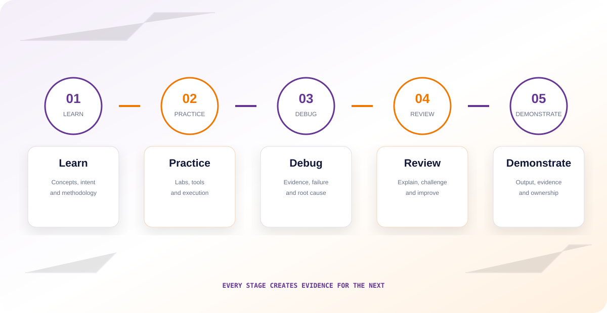

Capability
Continuous engineering development.
TSIQ Deep Tech Lab continuously develops semiconductor engineering capability so project teams can be evaluated against real requirements when they arrive.
 TSIQDEEP TECH LAB
TSIQDEEP TECH LABContinuous engineering development.
Technical problems and execution.
Observed and evaluated over time.
Capability developed across disciplines.
Capability mapped to real requirements.
Recruiting only when a project arrives creates a time gap between the project requirement and engineering readiness — and readiness means more than headcount. It means a team that already understands the engineering environment, tools, methodologies, documentation, reviews and execution discipline a project demands.

TSIQ Deep Tech Lab continuously develops semiconductor engineering talent within the Terasilicon IQ ecosystem. Selected engineers spend an extended period working in a structured engineering environment before any specific project requires them.
A client engineering requirement is received.
The specific technical capability the project needs is scoped out.
Relevant capability is already being built inside the TSIQ ecosystem.
Existing performance data is matched against what the project needs.
Appropriate engineers are selected and engineering execution begins.
A project doesn't require one person with one skill. It requires people who can work together. The Deep Tech Lab progressively develops talent across the domains a real semiconductor program needs.
The first objective isn't a project team — it's the engineering environment that continuously produces one.
Engineers encounter real technical problems, not simulated ones.
Engineering learnings are documented as they happen.
Engineers improve through repeated execution, not one-off exercises.
Engineering behaviour is observed and tracked over time.
High-performing engineers become visible through their work.
Engineers can eventually be organized around project requirements.
Where confidentiality, customer agreements and IP requirements permit, engineers work on problems connected to the Terasilicon IQ ecosystem — keeping the environment tied to the actual work of a semiconductor engineering company.
The project does not start the engineering.
The engineering starts before the project.
The Deep Tech Lab runs as a closed loop — capability built in one cycle strengthens every cycle after it.
A short assessment can't show how an engineer behaves under sustained engineering conditions. Six months provides time to observe growth, debugging, discipline, communication, consistency, ownership and response to failure and feedback.
Not every engineer automatically becomes project-ready after six months — different projects need different technologies, nodes, tools and experience levels. The objective is to continuously build strong capability that can then be evaluated against specific requirements.
The goal isn't engineers who have studied a discipline — it's a pool of engineers with different levels of demonstrated capability across each flow.
Engineers progressively develop across the full RTL-to-GDSII implementation flow.
Engineers build a broader verification capability rather than isolated individual training.
As TSIQ expands, the Lab can progressively develop capability across the full breadth of a semiconductor program.
With appropriate confidentiality and IP controls, technical learnings are documented and retained — so the organization is developing knowledge, not just people.
Engineers with potential.
Technical execution and problem solving.
Tools, methodologies and semiconductor workflows.
Groups of engineers developed within the same environment.
Future engineering opportunities.
Organizations requiring reliable semiconductor engineering capability.
A future partner should be able to look at TSIQ and see an organization continuously building engineering capability — engineers developed inside a technical environment, with performance observed over time, ready to be evaluated against a real requirement the moment one appears.
Confidence that Terasilicon IQ isn't building teams only after receiving a project — we're continuously investing in capability. Actual project staffing always depends on project requirements, experience levels, technology, confidentiality and client approval.
The Lab creates opportunities for collaboration with semiconductor companies, EDA companies, IP companies, universities and research organizations.
Projects create business.
Engineers create projects.
Engineering capability creates engineers.
Develop engineering capability.
Map capability to requirements.
Build and support the right team.
Capture knowledge and lessons learned.
Start from a stronger capability base.
Build the engineering capability before it arrives. If you're a semiconductor company, EDA partner, university or engineer interested in TSIQ Deep Tech Lab, we'd like to hear from you.
TSIQ Deep Tech Lab is an engineering capability initiative by Terasilicon IQ Private Limited.